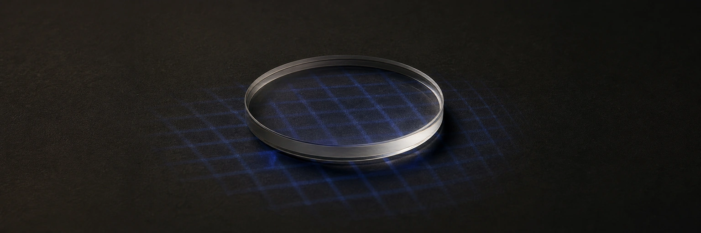

AI Classroom Intelligence
Har bir xulosa taymkod, manba model, confidence, ma’lumot sifati va inson qaroriga bog‘langan lokal dars analitikasi.

Kontekst
Bu nima
Platforma lokal video va audio signallarni normallashgan evidence eventlarga aylantiradi, keyin metodist yakuniy hisobotdan oldin epizod, manba va har omil hissasini tekshiradi.
Qanday muammoni yechadi
Bitta AI-score nima bo‘lganini tushuntirmaydi va kamera sifati past, shovqin yoki model xatosida xavfli bo‘ladi. Xom auditoriya videosini cloud’ga yuborish qo‘shimcha maxfiylik xavfidir.
Tizim
Texnik stek
Arxitektura
FastAPI dars, media asset, analysis job va review’ni boshqaradi. Lokal worker’lar detection, tracking, pose, VAD, diarization va ASR’ni bajaradi; MinIO media/evidence clip’ni, PostgreSQL event va holatni saqlaydi, dashboard timeline va izohni ko‘rsatadi.
Nega aynan shunday
Event modelning yakuniy score’idan barqarorroq kontrakt: uni qayta ishlash, boshqa signal bilan birlashtirish va inson tekshiruvidan o‘tkazish mumkin. AI worker domen tashqarisida, shuning uchun model almashsa review va report qoidalari qayta yozilmaydi.
Tizim xaritasi
Dalillar
Kuchli tomonlari
High-impact yoki low-confidence event jim o‘tmaydi: scoring ma’lumot sifati va review-state bilan cheklanadi. Vaqt kesishmalari deterministik birlashadi, bostirilgan dalil audit uchun saqlanadi.
Bu nimani isbotlaydi
Loyiha inference’dan tashqari AI-system ko‘nikmasini ko‘rsatadi: ingestion, model registry, navbat, evidence lineage, privacy, auth/RBAC, explainable scoring, observability va operator UX.
Sifat qanday ta'minlangan
Tekshiruv unit/integration test, golden report, model-pack manifest preflight, demo-dars smoke pipeline, media checksum, idempotent job planning va runtime API validationni o‘z ichiga oladi. Real model ro‘yxatdan o‘tgan artefakt va nazorat tekshiruvlarisiz ish konturiga kirmaydi.
To'liq QA-dalillar matritsasi →Chegaralar
Real kameralar o‘rnatilguncha customer-safe demo dataset ishlatiladi. Aniq auditoriya uchun accuracy lokal kalibratsiya, tasdiqlangan model pack va real dars validation set’isiz da’vo qilinmaydi.
Shunga o'xshash mahsulot kerakmi?
Kalit topshiriladigan holda quraman — arxitekturadan deploy va QA'gacha. 24 soatda baho bilan javob beraman.